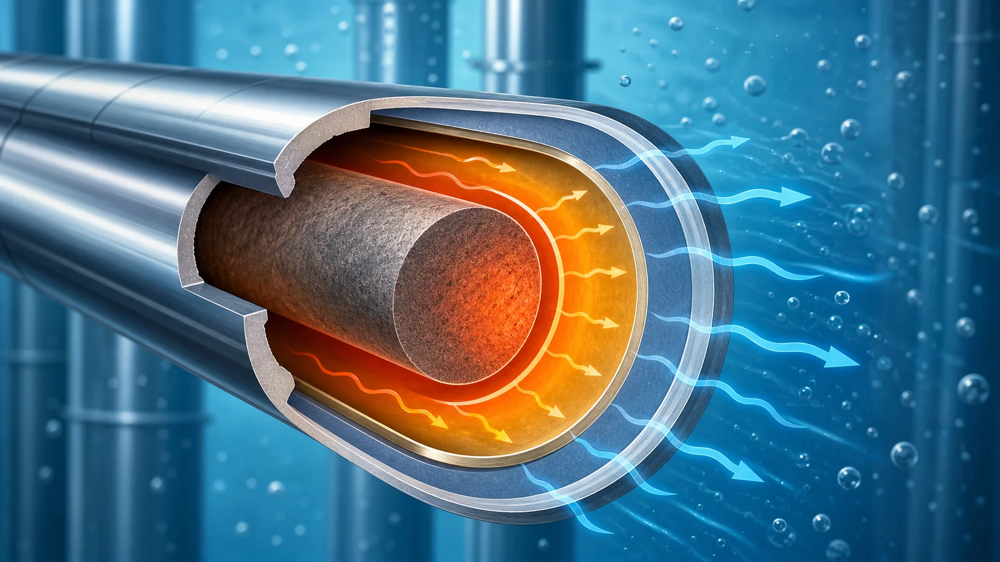
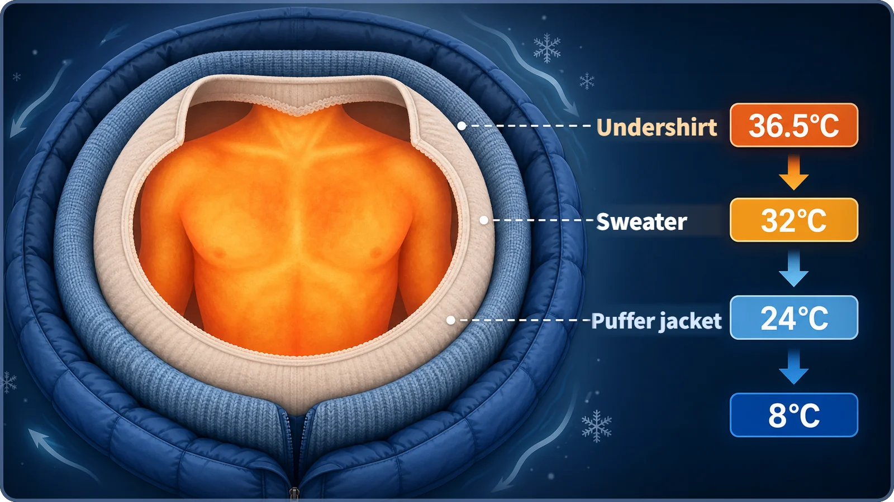
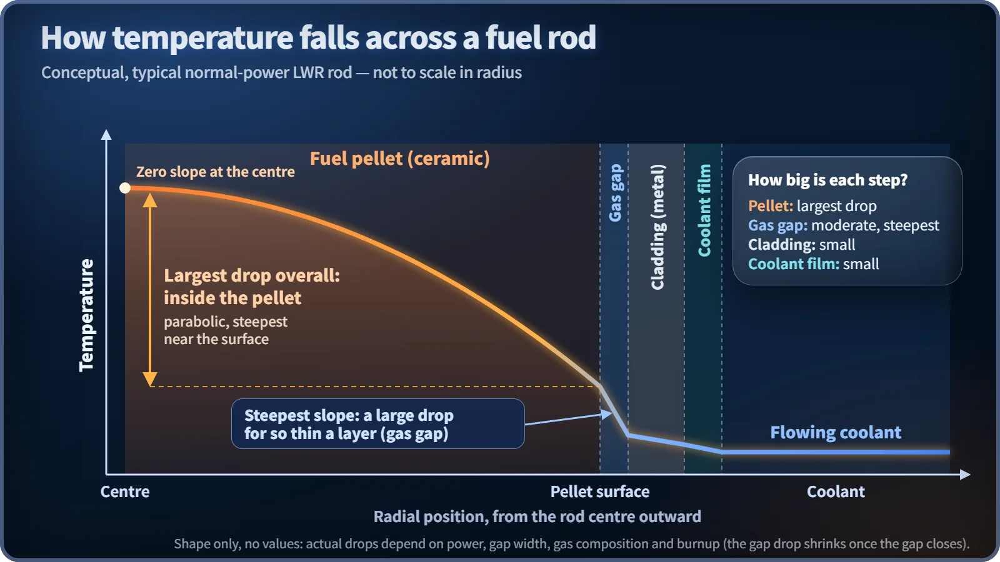

Heat Transfer & Thermal Hydraulics · 130
The More Layers You Wear, the Colder the Outside — Heat Flow Through the Gap and Cladding
Like warmth passing through layers of winter clothing, fuel heat crosses the gas gap and the metal cladding, losing temperature at each step on its way to the coolant.

Heat made in a fuel pellet reaches the coolant by crossing layers in sequence: pellet surface, gas gap, cladding, coolant. In steady operation nearly the same heat flux passes through each layer, but the temperature drop in each, ΔT ≈ q″ × Δx ÷ k, depends on its thickness and thermal conductivity. The gas gap is very thin, yet because the gas filling it conducts heat poorly, it can take an unusually large drop for its thickness.
Why the outside of your jacket feels cold
On a bitterly cold day, have you ever pulled a thick sweater over your undershirt and then zipped a puffer jacket on top? Step outside dressed like that and touch the outside of the jacket. Inside you're warm, yet the jacket's surface is cold, almost icy. Strange, isn't it? Your body temperature is 36.5 °C, so where did that heat go as it passed through layer after layer?
The heat didn't vanish. It left your body, passed through the undershirt, the sweater and the jacket, and finally escaped into the outside air. It's just that every time it crossed another layer, the temperature dropped a bit, step by step, like walking down a staircase. And remarkably, almost exactly the same thing happens to the heat that fuel makes inside a reactor on its way to the coolant.
Peel back the layers and you'll see the temperature take the stairs
Let's go through the layers from the inside out. The undershirt sits right against your skin, so the temperature difference across it isn't large. The thick puffer jacket on top is a different story. It's stuffed with down or synthetic fill, so for its thickness it is unusually bad at letting heat through. We all know from experience that the temperature drops far more across one puffy jacket than across a thin shirt. Same body, same heat, yet how much the temperature falls depends on which layer the heat is crossing.

Earlier we saw that, within a single material, low thermal conductivity makes heat pool inside. Today we take that principle beyond a single layer of a single material to the case of heat crossing several different layers in a row. Heat made in a reactor fuel pellet doesn't reach the coolant in one leap either. After leaving the pellet surface, it crosses the gas gap (a very narrow space deliberately left between the pellet and the cladding), then the cladding (the thin metal tube that encloses the fuel), and only then arrives at the coolant. Just like the bundled-up body, the temperature drops in steps each time the heat crosses one of these layers.
Why does the gas gap take such a big drop?
By thickness, the gas gap is one of the thinnest of all these layers, a slit narrow enough to measure in micrometers. Yet in practice, the temperature drop across the gas gap often turns out unusually large for its thickness. Why?
The answer lies in what fills the gap. The gas gap is usually filled with a gas such as helium, and gases conduct heat far worse (have much lower thermal conductivity) than solids. In clothing terms, the gas gap is a thin layer that insulates as well as a puffy jacket: because it holds gas, a thin slit can produce as big a temperature drop as a whole layer of clothing, sometimes bigger. The cladding, by contrast, is metal, which conducts heat relatively well compared with the ceramic pellet. Like a tightly knit sweater, it's one more layer to cross, but the temperature drop across it is often comparatively gentle.
Summing it up in a short formula
The relationship fits in one simple formula:
Heat flux (q″) ≈ thermal conductivity (k) × temperature drop (ΔT) ÷ thickness (Δx)
Here q″ is the heat passing through a layer per unit area (the heat flux), k is how well that layer's material lets heat through (its thermal conductivity; bigger means heat passes more easily), Δx is the layer's thickness and ΔT is the temperature drop across the layer. Rewritten around ΔT:
Temperature drop (ΔT) ≈ heat flux (q″) × thickness (Δx) ÷ thermal conductivity (k)
In a reactor operating normally, the amount of heat flowing from the pellet surface to the coolant (q″) is almost the same in every layer, because the heat neither leaks out nor piles up along the way. But as the formula shows, even with the same q″, a layer that is thicker (larger Δx) or conducts worse (smaller k) has a larger ΔT, a bigger temperature drop. The gas gap shows a large drop despite being thin precisely because its k is so small. Note that the single biggest drop in the whole rod still happens inside the pellet itself, as we saw earlier; the gap's drop is smaller than that, but remarkably large for a layer so thin.

The last step is a little different: from cladding to coolant
One point to note. Getting from the pellet surface across the gas gap, and from the gas gap through the cladding, is all conduction: heat passing through a solid (or a trapped gas). The final step, from the cladding surface into the flowing coolant, happens a little differently. That's convection, with moving water carrying heat away from the surface. The mechanism is different, but crossing that boundary still takes a certain temperature difference. Convection and the value that measures it (the heat transfer coefficient) are a subject for another time.
Easily confused ideas
Stepwise drops across several layers (this post) vs. the temperature profile inside one material (covered earlier). The earlier story explained why the center of a single material, the pellet, is hotter than its surface. Today we followed heat that has already left the pellet as it crosses separate layers made of different materials, the gas gap and the cladding, and drops further in temperature. It's the same principle (low thermal conductivity makes heat pool) applied on a different stage.
Gas gap (a designed space) vs. a defect or damage. The gas gap is not a manufacturing mistake. It is left on purpose at the design stage, as room for the fuel to expand when it heats up during operation and to ease the mechanical stress that direct contact with the cladding could cause.
Two common misconceptions
Misconception 1: "The temperature drops by about the same amount in every layer." No. The size of the drop varies greatly from layer to layer depending on its thickness and its material's thermal conductivity. A layer like the gas gap, thin but with very low thermal conductivity, can show an unusually large drop for its thickness.
Misconception 2: "The gas gap is a design flaw, so the less of it the better." No. The gap is a deliberate design feature that accommodates the fuel's thermal expansion and eases mechanical contact and stress with the cladding. Because a wider gap does increase the temperature drop across it, the gap width is set as a balance among several requirements.
Today in one breath
- Heat made in a fuel pellet reaches the coolant by crossing several layers in order: pellet surface → gas gap → cladding → coolant.
- In normal operation the heat flux through each layer is almost the same, but the temperature drop differs from layer to layer with thickness and thermal conductivity: the thicker the layer, or the lower its conductivity, the more the temperature falls across it.
- The gas gap is thin, but the gas filling it has low thermal conductivity, so it can produce an unusually large temperature drop for its thickness.
- The final stretch, from the cladding surface into the coolant, is convection rather than conduction, but the big picture, that a temperature difference is needed at that boundary too, is the same.
We've now followed fission heat from its birth inside the pellet out through the gas gap and the cladding. Next comes the final hand-off into the coolant: convection, where flowing water carries the heat away.